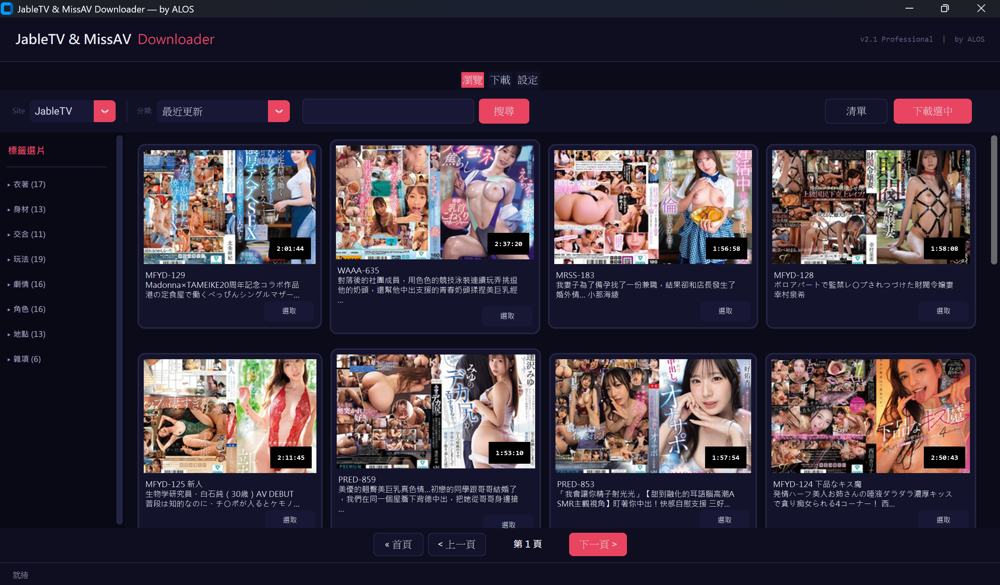
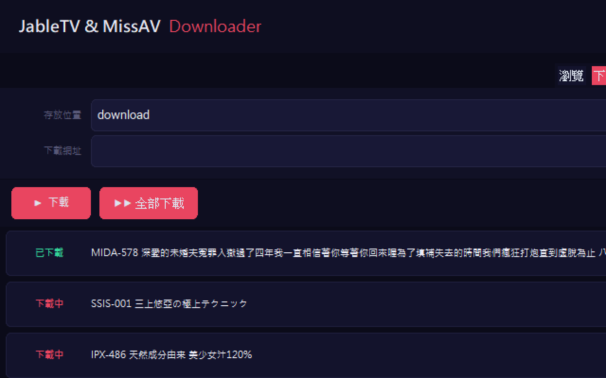
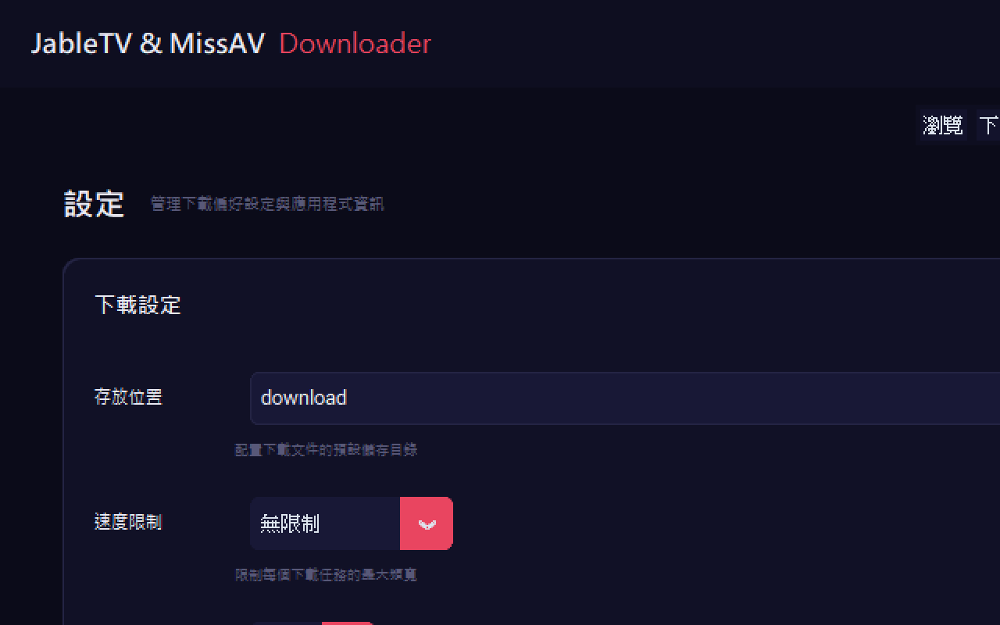

立即下載Download Now
免費、開源、免安裝。Windows 雙擊即用。Free, open source, portable. Double-click on Windows.
為什麼需要下載工具？ Why Do You Need a Download Tool?
線上觀看 Jable TV、MissAV 等影片網站時，常會遇到幾個惱人的問題：廣告彈窗太多、播放卡頓緩衝、載入速度慢。如果能預先把影片下載到電腦，就能享受流暢無廣告的觀看體驗。 When streaming videos on sites like Jable TV or MissAV, you often run into annoying issues: too many ad popups, playback buffering, and slow loading. Downloading videos to your computer lets you enjoy smooth, ad-free viewing.
但問題是，這些網站的影片都使用 M3U8/HLS 串流協定，不像一般的 MP4 檔案可以直接右鍵另存。市面上的下載工具大多需要命令列操作，對一般使用者來說門檻太高。 The problem is these sites use M3U8/HLS streaming protocol, so you can't just right-click and save like regular MP4 files. Most download tools require command-line operation, which is too complex for average users.
JableTV Downloader 就是為了解決這個問題而開發的。它提供完整的圖形介面，讓你像使用一般應用程式一樣輕鬆下載影片。 JableTV Downloader was built to solve this problem. It provides a full graphical interface, letting you download videos as easily as using any regular app.

跟其他工具有什麼差別？ How Does It Compare to Other Tools?
市面上有一些 CLI 命令列工具和瀏覽器外掛可以下載 Jable 的影片，但跟 JableTV Downloader 比起來差距明顯： There are some CLI tools and browser extensions that can download Jable videos, but the differences are significant:
| JableTV Downloader | CLI 工具CLI Tools | 瀏覽器外掛Extensions | |
|---|---|---|---|
| 圖形介面GUI | ✓ | × | × |
| 支援 MissAVMissAV | ✓ | 通常不Usually no | ✓ |
| 批量並行Batch Parallel | 10 路10 threads | 1 | 1 |
| 內建瀏覽Built-in Browse | ✓ | × | × |
| 免安裝Portable | .exe | Python | ✓ |
| 進度條Progress | ✓ | 文字Text | × |
| 持續更新Maintained | 2026 | 多已停更Dead | 不穩定Unstable |
功能特色 Features
完整下載器（JableTV_Modern.exe） Full Downloader (JableTV_Modern.exe)
- >Material Design 原生介面Native UI — 深色主題桌面應用，無需瀏覽器Dark theme desktop app, no browser needed
- >內建瀏覽器Built-in Browser — 直接在 App 內瀏覽分類、搜尋關鍵字、翻頁Browse categories, search keywords, paginate in-app
- >多選下載Multi-Select — 勾選多部影片，一鍵送入下載佇列Check multiple videos, send to download queue in one click
- >10 路並行下載10 Parallel Downloads — 同時下載最多 10 部，可於設定頁調整Download up to 10 simultaneously, configurable in settings
- >畫質選擇Quality Selection — 最高畫質（預設）或最低畫質（省流量）Highest (default) or lowest quality (save bandwidth)
- >速度限制Speed Limit — 可設定 1/2/5/10/15 MB/s 或無限制Set 1/2/5/10/15 MB/s or unlimited
- >即時進度條Real-time Progress — 每部影片獨立顯示進度、速度、狀態Per-video progress, speed, and status display
- >智慧剪貼簿Smart Clipboard — 複製網址自動偵測加入佇列Auto-detect copied URLs and add to queue
- >自動合併Auto Merge — TS 片段自動合併為完整 MP4Auto merge TS segments into complete MP4
- >斷點續傳Resume Downloads — 取消後重新下載，已完成片段不會重抓Resume interrupted downloads without re-fetching completed segments
- >高 DPI 支援HiDPI Support — 自動適配高解析度螢幕Auto-scale for high resolution displays
每日自動下載（Jable_smalltool.exe） Daily Auto-Download (Jable_smalltool.exe)
- >一次設定，每日自動Set Once, Auto Daily — 選一次資料夾，程式每 24 小時自動檢查Pick a folder once, app checks every 24 hours
- >鎖定中文字幕Chinese Subtitles Only — 只抓有中文字幕的新片Only downloads videos with Chinese subtitles
- >去重記憶Deduplication — 下載過的不會重抓Already downloaded videos won't be re-downloaded
- >可背景常駐Background Mode — 最小化到工作列即可Minimize to system tray
使用方式 How to Use
下載並執行Download and Run
前往 GitHub Releases 下載 JableTV_Modern.exe（約 27 MB）。雙擊執行，不需要安裝任何東西。 Go to GitHub Releases and download JableTV_Modern.exe (~27 MB). Double-click to run — no installation needed.
瀏覽影片Browse Videos
切換到「瀏覽」分頁，選擇 JableTV 或 MissAV，瀏覽分類或搜尋關鍵字。看到喜歡的影片，勾選前方的核取方塊。 Switch to the "Browse" tab, select JableTV or MissAV, browse categories or search keywords. Check the checkbox next to videos you like.
開始下載Start Downloading
點擊「下載選中」或切換到「下載」分頁直接貼上網址。下載佇列會顯示每部影片的即時進度條、下載速度和狀態。 Click "Download Selected" or switch to the "Download" tab and paste URLs directly. The queue shows real-time progress bars, speed, and status for each video.

調整設定（選用）Adjust Settings (Optional)
在「設定」分頁可以調整：存放位置、速度限制、並行下載數、畫質選擇。預設值已經夠用，但你可以依需求微調。 In the "Settings" tab you can adjust: save location, speed limit, parallel downloads, quality selection. Defaults work well, but you can fine-tune as needed.

macOS / Linux 使用者 macOS / Linux Users
非 Windows 使用者可以透過 Python 直接執行。確認已安裝 Python 3.8 以上版本： Non-Windows users can run it directly with Python. Make sure you have Python 3.8+ installed:
支援網站 Supported Sites
| 網站Site | 瀏覽Browse | 搜尋Search | 下載Download |
|---|---|---|---|
| Jable.tv | ✓ | ✓ | ✓ |
| MissAV | ✓ | ✓ | ✓ |
| 其他 M3U8Other M3U8 | — | — | ✓ |
立即下載Download Now
免費、開源、免安裝。Windows 雙擊即用。Free, open source, portable. Double-click on Windows.